Playful Health Technology for Hypertension Management
at the Intersection of Indigeneity and Disability
A Scoping Review


Northern Arizona University sits at the base of the San Francisco Peaks, on homelands sacred to Native Americans throughout the region.
We honor their past, present, and future generations, who have lived here for millennia and will forever call this place home.
Hypertension and heart disease among American Indians and Alaska Natives.
- Blood pressure that stays high. The Navajo survey counted 140/90 or above, or taking blood-pressure medicine[1]; newer studies use 130/80[2].
- Heart disease is the leading cause of death for American Indians and Alaska Natives; over a third of these deaths come before age 65[3].
- Among older AI and AN Medicare patients, 72% have hypertension[4].
- Of all heart-disease risk factors in Native adults, hypertension accounts for the largest share: 42%[5].
Among Navajo (Diné) adults, high blood pressure is often unknown.
- Of 97 Navajo adults with high readings, only 50 had ever been told[1].
- In a Northern Plains tribe, only half knew; under age 40, 27%[2].
- These numbers describe Navajo people broadly. This work is with urban Diné adults in Flagstaff, where my IRB approval and community partners are.
High blood pressure is common among Native people with disabilities.
- Among disabled Navajo, Chippewa-Cree, and Shoshone-Bannock clients, high blood pressure was the second most common health problem[1].
- Older AI and AN adults had the highest disability rate of any group: 38.4%[3].
Indigeneity and disability as one intersectional population.
- Native people and disabled people have both been labeled and pushed to the margins[1].
- For Native people with disabilities, a person's self-determination depends on the nation's self-determination[2].
- Research on the two is spread thin across health, rehabilitation, and education[1].
This work studies the overlap: urban Diné adults with disabilities, and their supporters.
Guiding Questions for this Review
To study that intersection in playful health technology, I ask three questions.
- RQ1How are serious games and playful health technologies used for hypertension self-management?
- RQ1.1What portion of this work is designed for Indigenous communities and people with disabilities?
- RQ2What human-centered design methods support intersectional design of playful health technologies with Indigenous communities and people with disabilities?
CardioCare Quest: the lab project behind this review.
- Our lab is building CardioCare Quest, a multi-game platform for hypertension management, with games for the five factors.
- The screens: Dog Walking, a GPS walk, and Vascular Village, where players can log their blood pressure.
- This review asks what the research says about tools like this, and whom they reach.
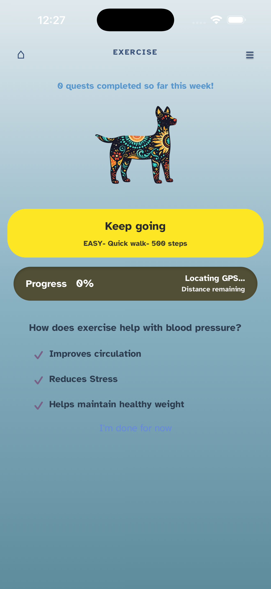
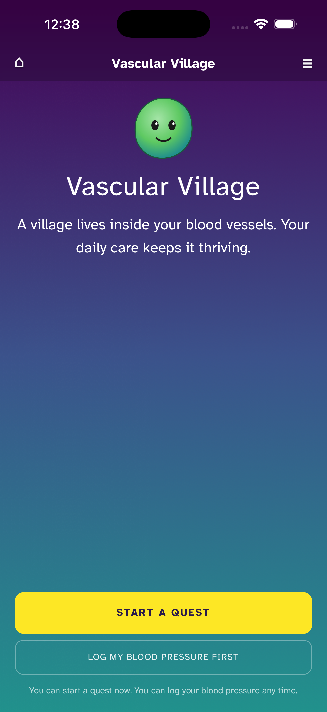
The review's themes form a tree, and the talk follows it.
One branch at a time: first a table of the studies in that branch, then the papers one by one: motive, method, finding, and what I learned. The small tree in the top corner shows where we are.
34 core papers, centered on Native Americans in the U.S.
By branch: 12 hypertension · 12 disability · 6 Indigenous design · 4 serious games. The earlier broad search is in the backup.
The hypertension branch: the big picture first.
| Leaf | Papers | What the papers show |
|---|---|---|
| Burden | Percy 1997; Sharlin 1993; Rhoades 2003; Eberly 2023 | Common, rising with age, and often unknown: about half with high readings had not been told. |
| Risk | Mendlein 1997; Jernigan 2010; Rawal 2023; Zamora-Kapoor 2024 | Risk factors travel together; hypertension is the largest single share of heart disease. |
| Context | Breathett 2020; Assari & Zare 2025 | Heart risk is clinical and social: poverty, funding, and history. |
| Care at home | Hózhó trial; Sinclair 2023 | Home cuffs, phone support, and grocery help bring care to where people live. |
Half of the adults with high blood pressure did not know it.
Percy et al. 1997[1]
780 Navajo adults, eight Indian Health Service units, 1991–92
Method random household survey; blood pressure measured three times
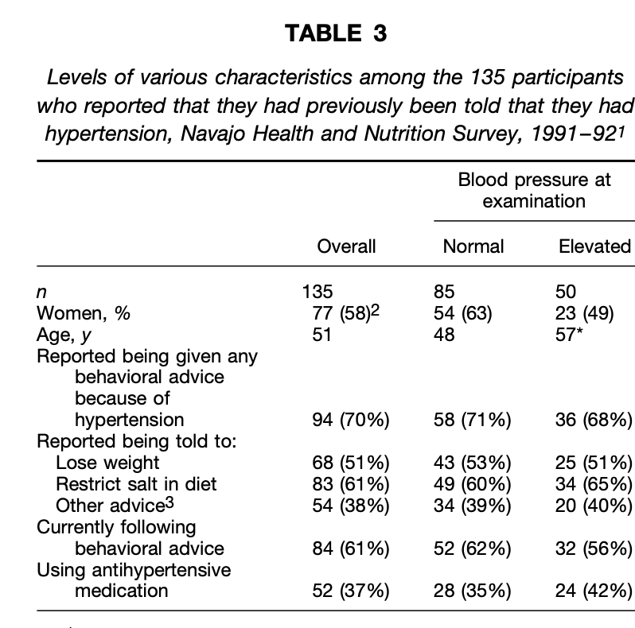
Found Only 50 of 97 with high readings had been told. Of those told, 61% followed the advice.
Sharlin et al. 1993[2]
418 adults of one Northern Plains tribe, South Dakota, 1986
Method compared what people said with what was measured
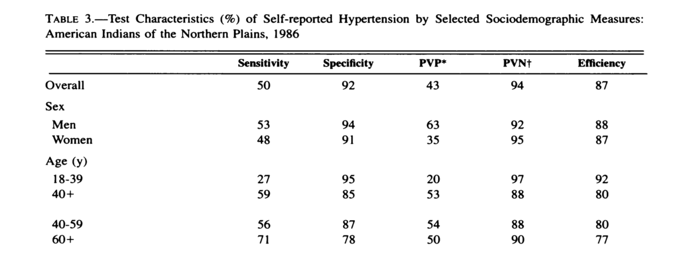
Found Sensitivity 50%: half knew. Ages 18–39: 27%.
Hypertension in urban Native elders (38%) and older Medicare patients (72.2%).
Rhoades & Buchwald 2003[1]
524 AI and AN patients aged 50+, an urban Indian clinic in Seattle
Method chart review of every patient seen in one year
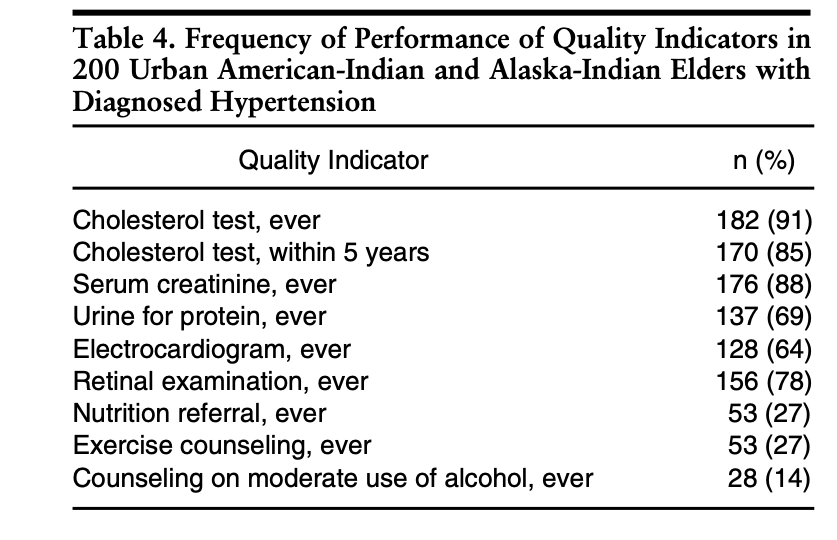
Found 38% diagnosed; of these, 83% on medicine and 36% controlled; nutrition and exercise counseling recorded for 27%.
Eberly et al. 2023[2]
220,598 AI and AN Medicare patients aged 66+, 2015–2019
Method national cohort from Medicare billing records
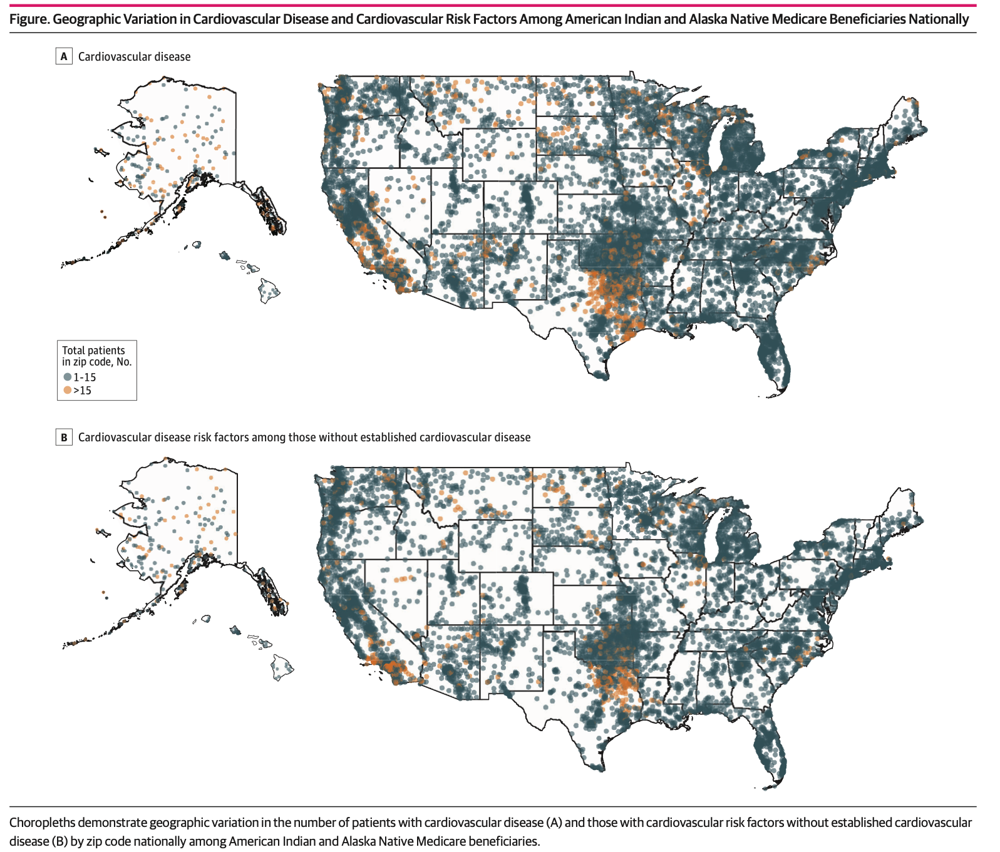
Found 72.2% had hypertension; half had a serious heart condition, across the whole country.
Risk factors travel together.
Mendlein et al. 1997[1]
788 Navajo adults, the same 1991–92 survey
Method interviews in Navajo or English, blood tests, a glucose test, and body measures
Found Overweight: 35% of men, 62% of women. Obese adults were about 4 times as likely to have diabetes, hypertension, or a poor cholesterol level. The authors point to diet and activity for prevention.
Jernigan et al. 2010[2]
13,652 AI and AN adults in two national phone surveys, 1995–96 and 2005–06
Method repeated cross-sectional survey with adjusted prevalence
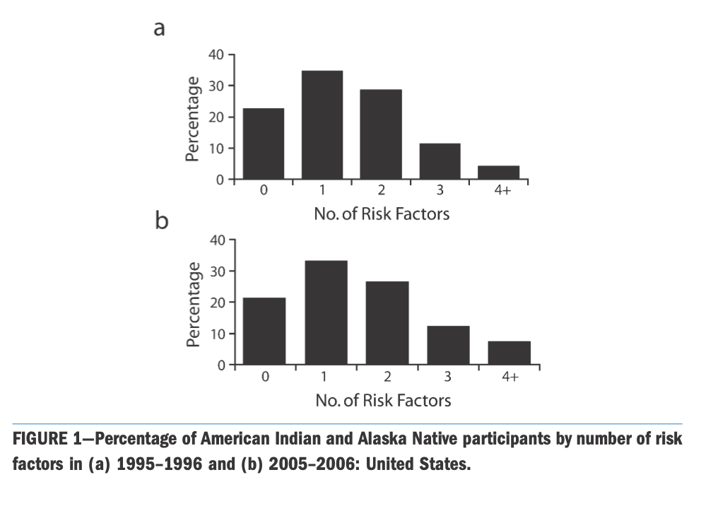
Found 79% had at least one of six risk factors. The authors call for community-based participatory research.
Hypertension is the largest single share of heart disease.
Rawal et al. 2023[1]
8,497 AI and AN adults, 2017 national survey
Method Life's Simple 7 score, regression, and population attributable fraction
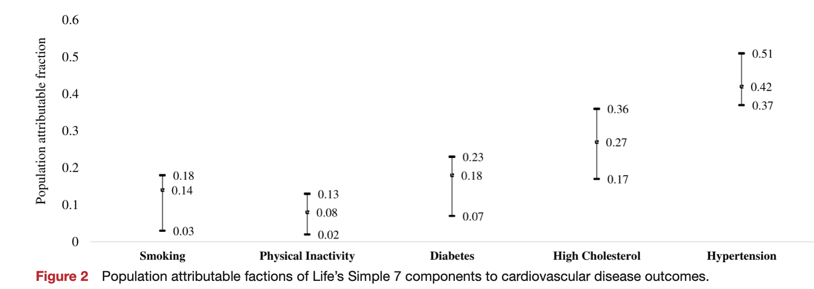
Found Hypertension: 42% of heart-disease outcomes. Mostly ideal scores: 80% lower odds.
Zamora-Kapoor et al. 2024[2]
312 AI and AN youth among 7,793 adolescents followed into adulthood
Method mediation analysis: each risk factor tested with and without body weight (BMI)
Found AI and AN youth had the highest obesity, smoking, and later high blood pressure (27%). With 312 people, no adjusted factor was significant; the authors ask to oversample Native youth.
Heart risk is clinical and social at the same time.
Breathett et al. 2020[1]
American Heart Association statement on AI and AN heart health
Method expert narrative review, drawing on the Strong Heart Study
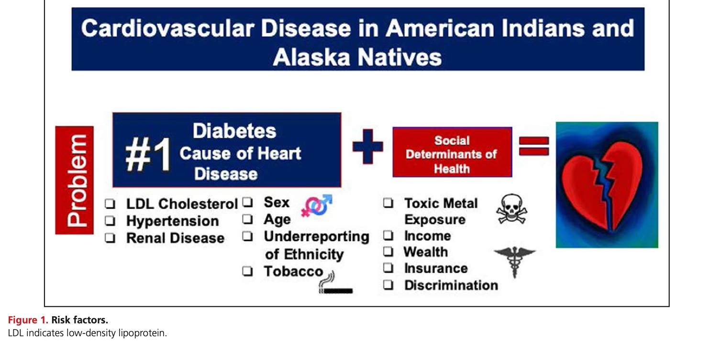
Found Clinical risks plus social determinants. Indian Health Service spending in 2017: $4,078 per person vs $13,185 for Medicare.
Assari & Zare 2025[2]
AI and AN and White adults, 2023 National Health Interview Survey
Method regression with a race × education interaction
Found More education went with lower odds of hypertension, but less so for AI and AN adults. They call this Minorities' Diminished Returns.
Care can come to the home.
Hózhó trial (Eberly et al.)[1]
Diné adults with heart failure, Gallup Indian Medical Center and Tohatchi Health Clinic
Method stepped-wedge randomized trial: five groups start 30 days apart
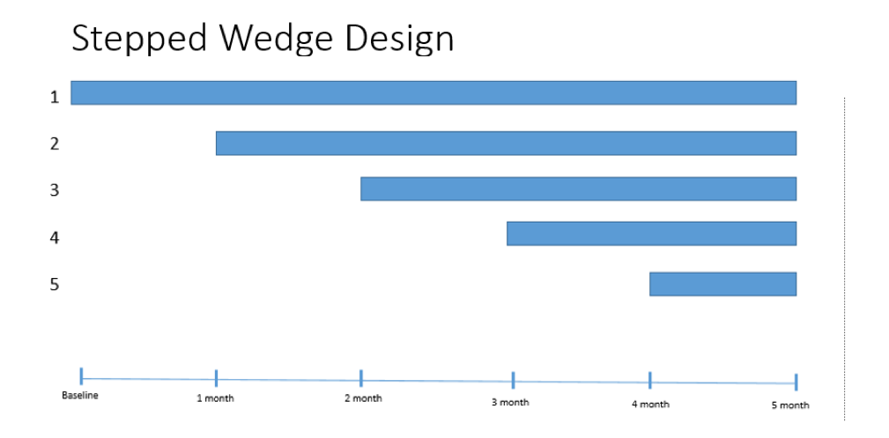
Found A home blood-pressure cuff for each patient; a team adds missing medicines and adjusts doses by phone. This file is the protocol.
Sinclair et al. 2023 (NOSH)[2]
370 urban AI and AN adults with hypertension, three urban Indian clinics
Method randomized waitlist-control trial (protocol)
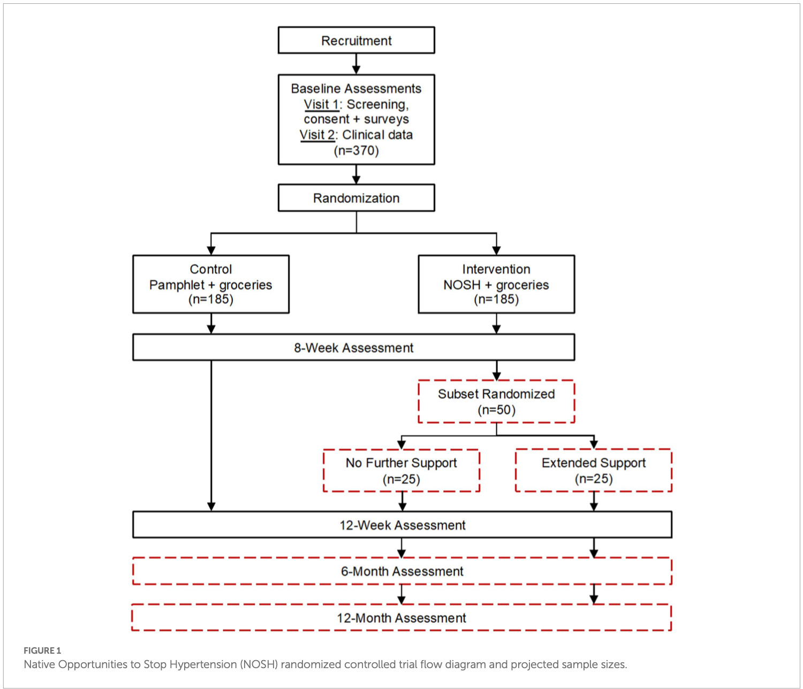
Found Eight weekly phone or Zoom sessions on DASH and traditional foods, $30 of groceries a week, low-literacy materials.
The disability branch: the big picture first.
| Leaf | Papers | What the papers show |
|---|---|---|
| Disability and BP | Hodge 1989; Sanderson 1998; Okoro 2007 | High blood pressure is one of the most common health problems among Native people with disabilities. |
| Place | Reisinger & Ripat 2014; Mashinchi 2022 | Roads, water, and distance disable; living among other Native people goes with less disability. |
| Native views | Weaver 2015; Frankland 2004; Rabang 2023; Yellowhorse 2018, 2022 | Diné and Lakota have no word for disability; a person is valued by relationships and roles. |
| Measures | Nozadi 2019; Rennie 2023 | Standard tests were normed with 1% to 2% Native children; read them with Diné home life in mind. |
Blood pressure sits inside the disability experience.
Hodge 1989[1]
170 adults in three tribal rehabilitation programs: Navajo, Chippewa-Cree, Shoshone-Bannock, 1987
Method needs-assessment interviews; questions shaped by the tribal programs, asked by local staff
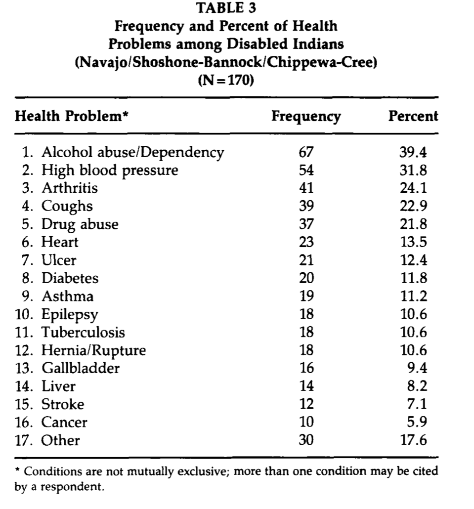
Found High blood pressure 31.8%, second after alcohol; 42.2% of Navajo clients. 84% lived with family.
Sanderson et al. 1998[2]
32 adults with disabilities, northwest New Mexico: 75% Navajo, also Zuni and Laguna
Method needs-assessment interviews, written as a fact sheet for service planners at NAU
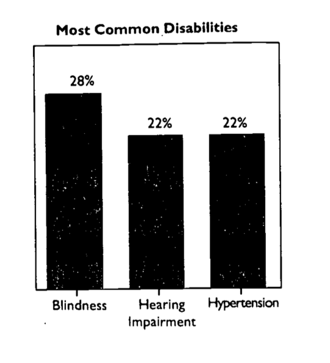
Found Blindness 28%, hearing loss 22%, hypertension 22%. Family members preferred as helpers.
The place can disable, and community can protect.
Reisinger & Ripat 2014[1]
28 Navajo assistive-technology users and 7 providers, in Chinle
Method talking-circle focus groups in Navajo or English, with a Navajo-owned independent living center (CBPR)
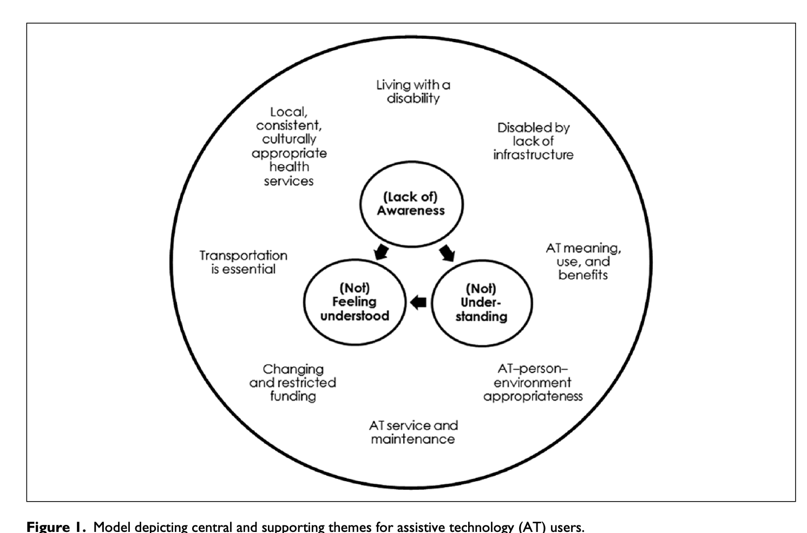
Found Unpaved roads, no running water, and distance disabled people; wheelchairs built for sidewalks stuck in sand and mud.
Mashinchi et al. 2022[2]
all 3,220 U.S. counties, Census data 2015–2019
Method county-level analysis, mapped against tribal lands
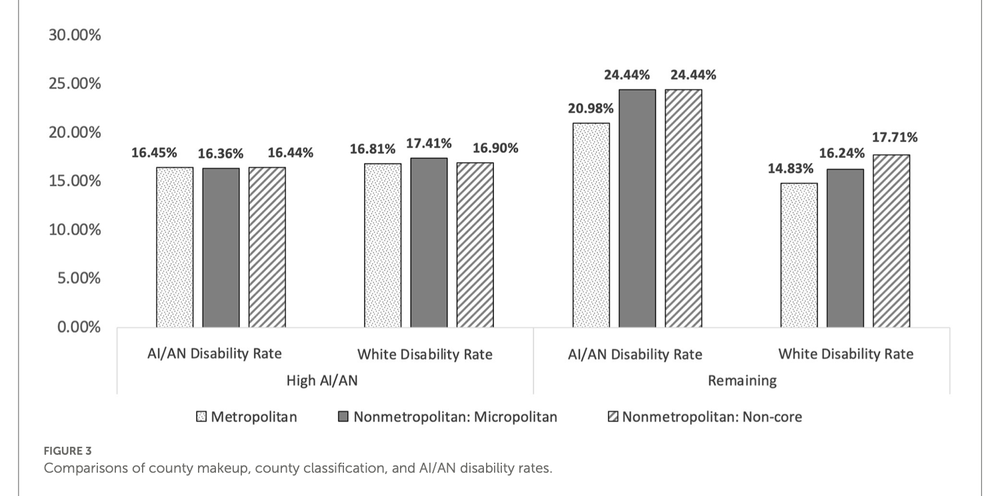
Found In counties at least 5% Native, Native disability was 16.4%, vs 21–24% elsewhere.
Diné and Lakota have no word for disability.
Weaver 2015[1]
Native American views of disability, from social work
Method conceptual review from social work
Found Interdependence over independence. A person who fills a role in family and community is often not seen as disabled. Colonization, through boarding schools, reservations, and forced sterilization, produced disability.
Frankland et al. 2004[2]
Diné families and youth with developmental disabilities moving into adult life
Method conceptual review comparing the four parts of self-determination with Diné values
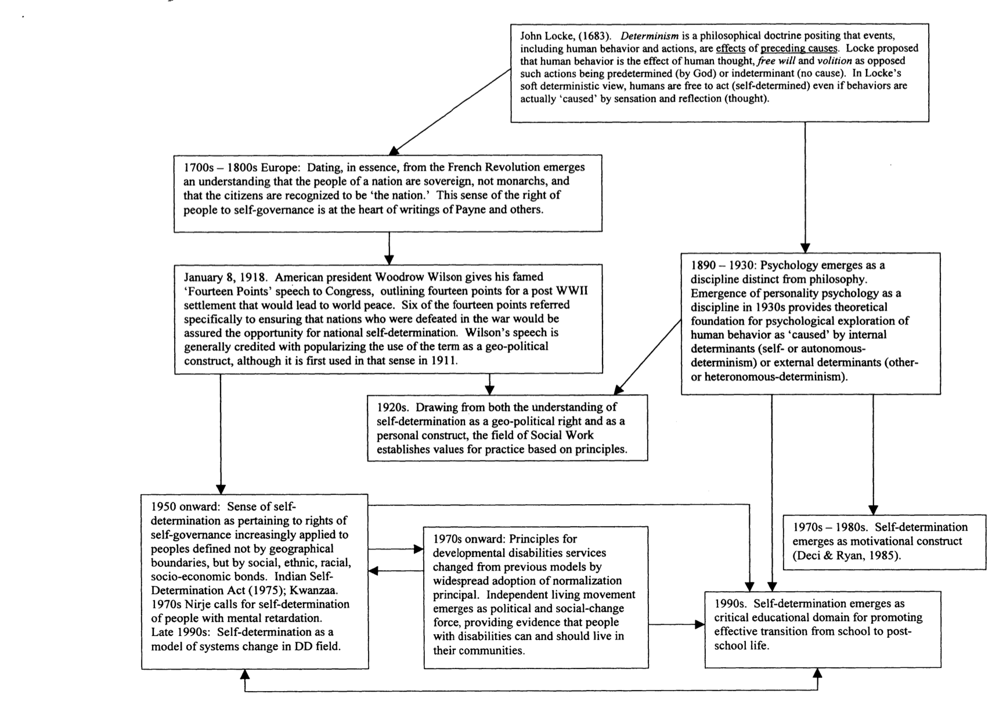
Found Each part matters, lived through family, clan, and interdependence. Diné term: tááweeajitéégó. Every child is expected to contribute to the family.
Self-determination, and K'é: relatives first.
Rabang et al. 2023[1]
Indigenous scholars, including a Navajo Nation member, on disability programs in South Dakota, Arizona, and Alaska
Method position paper using Indigenous storytelling and program cases
Found Two meanings of self-determination: a person's own choices, and a nation governing itself; one needs the other. Oyáte Circle's own Lakota branding earned more trust than the university's.
Yellowhorse 2018, 2022[2, 3]
a Diné scholar and parent of a disabled child
Method critical analysis of a Navajo immersion school (2018 thesis) and of COVID-19 responses (2022)
Found A school built fully on Diné design still sorted children. K'é: every child is first a relative. Value people by relationship rather than productivity.
Standard tests need to be read with Diné home life in mind.
Nozadi et al. 2019[1]
530 Navajo infants, Navajo Birth Cohort Study
Method home visits by Navajo staff; scores compared with U.S. norms; accuracy estimated without a gold standard (Bayesian)
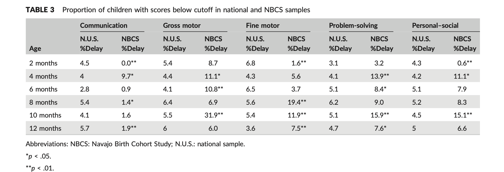
Found At 10 months, gross motor flagged 31.9% vs 5.5% nationally. Authors point to shared caregiving and cradle boards.
Rennie et al. 2023[2]
138 Diné children about age 4, same cohort
Method three-to-four-hour multi-test visit, team diagnosis; tools reviewed with traditional healers and community members
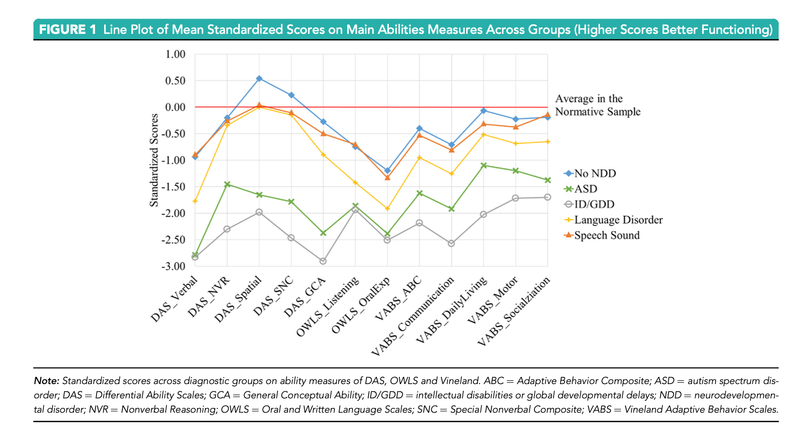
Found Language scores low in every group; nonverbal and spatial scores average.
The Indigenous branch: the big picture first.
| Leaf | Papers | What the papers show |
|---|---|---|
| Cultural grounding | Kaholokula 2015, 2021; Vigil-Hayes 2021; Hagemann 2026 | Programs built on a community's own practice lowered blood pressure and drew people in; youth asked for their own nation's culture, explained. |
| Community decides | Billey 2024; Hagemann 2024 | Advisory boards and tribal staff decide cultural content and check every resource. |
Programs built on a community's own practice.
Kaholokula et al. 2021[1]
263 Native Hawaiian adults with hypertension, three islands
Method randomized trial built with CBPR; hula taught by a kumu hula, a hula master
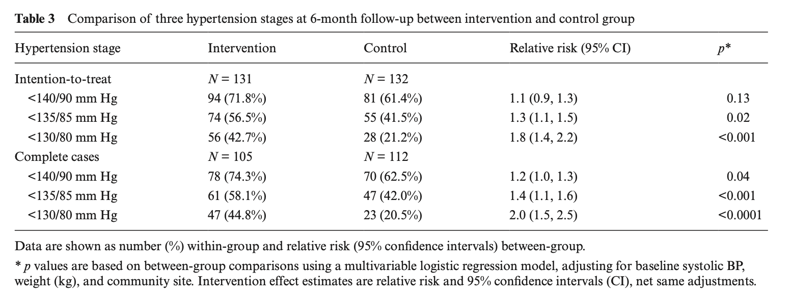
Found Below 130/80: 42.7% with hula vs 21.2% with education only. The 2015 pilot: systolic −18.3 vs −7.6 mmHg.
Vigil-Hayes et al. 2021[2]
6 Navajo and Hopi advisors and 10 Native youth, Flagstaff
Method tribal participatory research with an advisory board; cooperative inquiry with youth
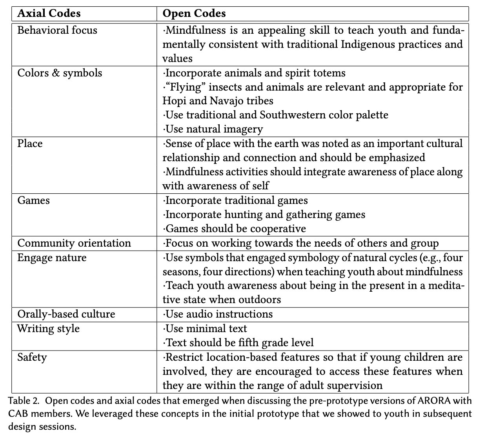
Found The board chose the butterfly, cooperative games, spoken instructions, and fifth-grade text. Youth asked for the cultural meaning to be explained.
One nation at a time.
Hagemann et al. 2026[1]
9 Hopi/Tewa youth test ARORA over Zoom during COVID-19
Method usability test within participatory action research: 10 tasks, a survey, and grounded theory
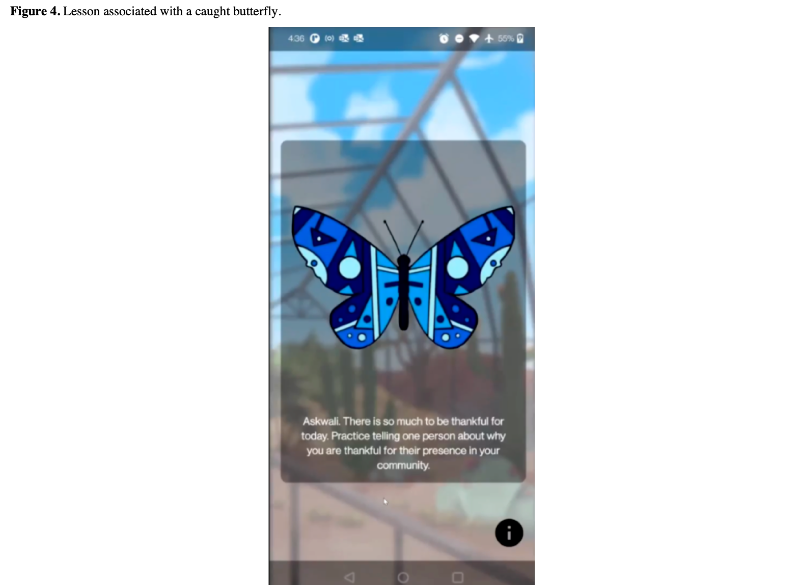
Found Youth valued the Hopi word Askwali and asked for Hopi landscapes, like the mesas.
Survey results[1]
Modified mobile app rating scale, 1 to 5
Method the same 9 youth
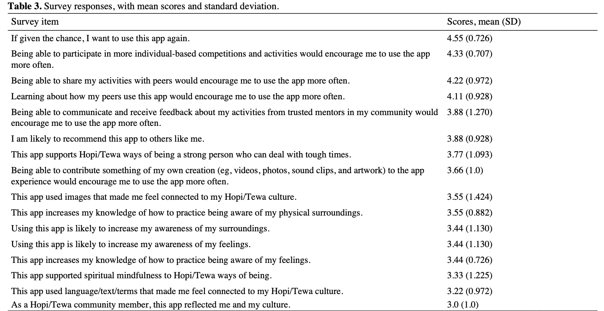
Found "Want to use again": 4.55. "Reflected me and my culture": 3.0.
The community decides what is shared, and how.
Billey et al. 2024[1]
Diné toddlers with developmental delay and their caregivers, Shiprock
Method cultural adaptation with a 23-member advisory board (95% Diné), guided by 11 adaptation steps
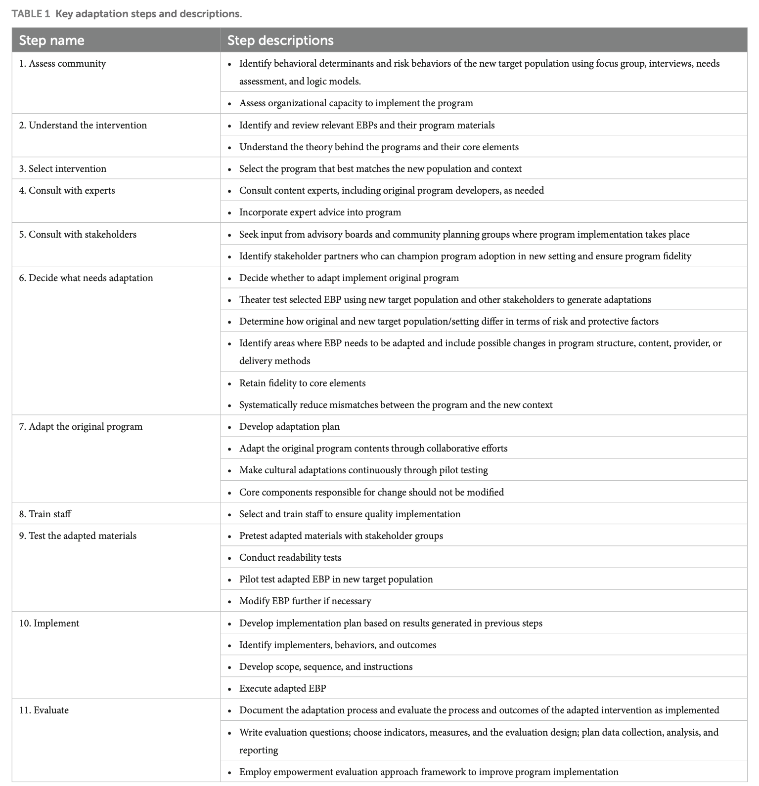
Found "Language nutrition" became Indigenous language nutrition: Diné Bizaad, kinship greetings, ceremonies, seasonal routines.
Hagemann et al. 2024[2]
15 Hopi Behavioral Health Services staff, Second Mesa
Method participatory design: live demo, think-aloud on their own phones, group debrief
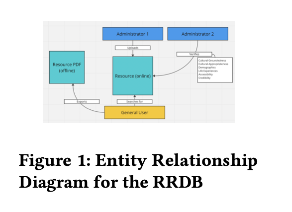
Found Tribal staff approve every resource for cultural fit; a second staff member must verify. Users stay anonymous.
- Across the papers: approval by the Navajo Nation Human Research Review Board; ARORA kept data on a tribally controlled server[3].
The theory branch: the big picture first.
| Leaf | Papers | What the papers show |
|---|---|---|
| Serious games | Clochesy 2015; Hickman 2021; Radhakrishnan 2025; Graham 2025 | Games can rehearse a clinic visit, turn real steps into progress, and grow from community sketches. |
| Methods | All 34 papers | Surveys, chart review, trials, mediation, talking circles, advisory boards, participatory design. |
| Wicked problems and RtD | Graham 2025, using Rittel & Webber 1973 | A health game has no single right answer, so we learn by making. |
What makes a serious game for health?
Clochesy et al. 2015[1]
eSMART-HD, a 3D clinic-visit game for adults with chronic illness
Method community participatory framework: 11 focus groups, script tested with actors, then avatars
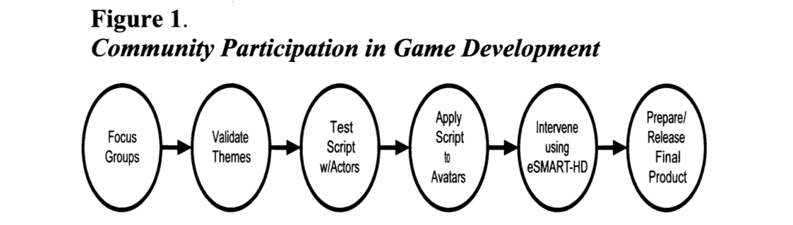
Found Captions added for people with hearing loss helped every user, so they became the default.
Elements of a serious game[1]
Their table maps each element to a design choice
Method Lieberman's model: challenge, motivation, role models, simulation, repetition, feedback
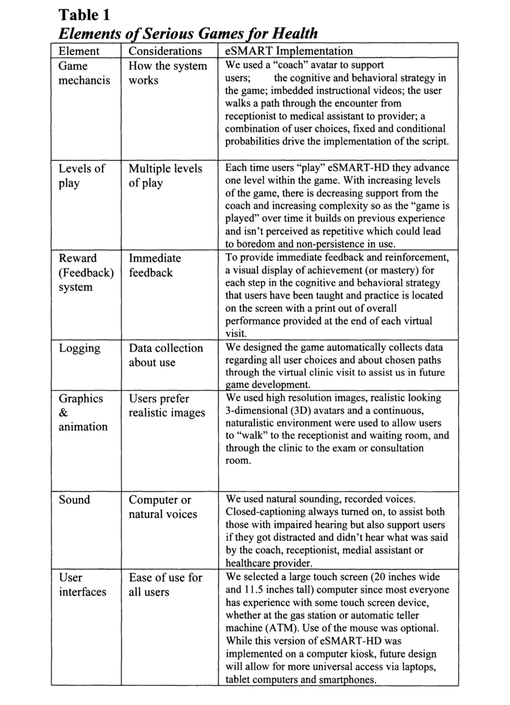
Found A coach avatar, levels with less coaching each time, immediate feedback, a large touchscreen.
Games can rehearse a clinic visit, or turn steps into progress.
Hickman et al. 2021[1]
109 adults with hypertension, Northeast Ohio; 76% African American, Hispanic, or multiracial
Method pilot randomized trial with an attention control (hypertension videos)
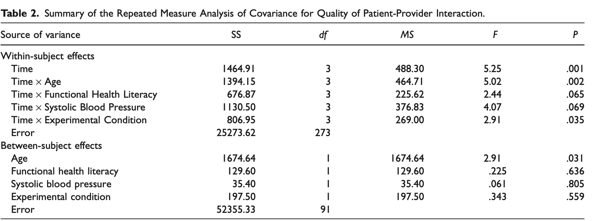
Found Ratings of real provider visits rose about 7 points with the game; the time-by-group change was significant (P = .035).
Radhakrishnan et al. 2025[2]
220 Lumbee adults with hypertension (planned), Robeson County, North Carolina
Method randomized trial protocol built with CBPR; both groups get a Fitbit
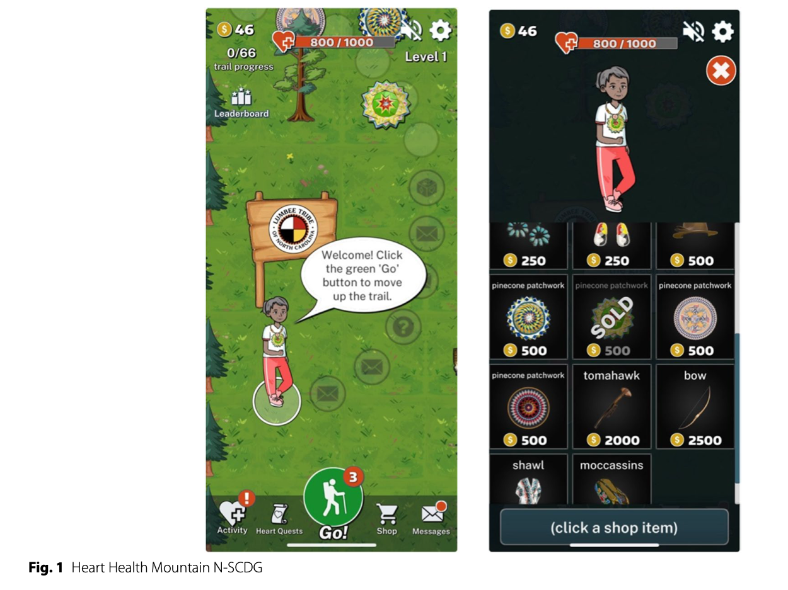
Found Heart Health Mountain: real steps move the avatar up a trail to Lumbee landmarks; coins buy cultural items.
14 Indigenous participants sketched five hypertension management games.
Graham, Ikwunne & Duval 2025[1]
14 Indigenous women in Northern Arizona, including Diné, Hopi, and Chickasaw
Method a two-hour participatory design workshop, inside research through design
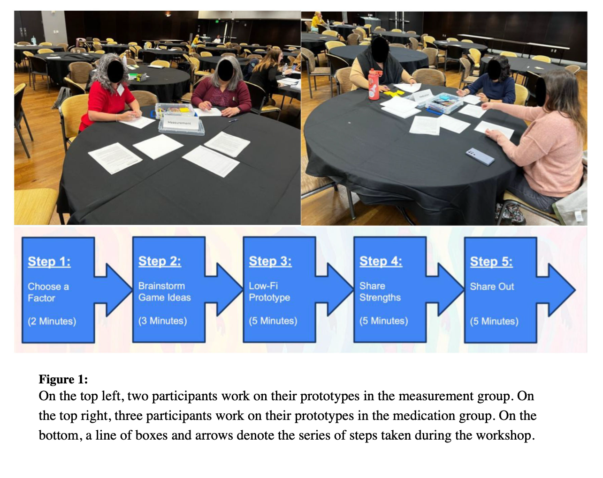
Found Five timed steps: choose a factor, brainstorm, sketch, share strengths, share out.
The diet game[1]
From paper sketch to prototype
Method the team built one prototype per factor and compared them in an annotated portfolio
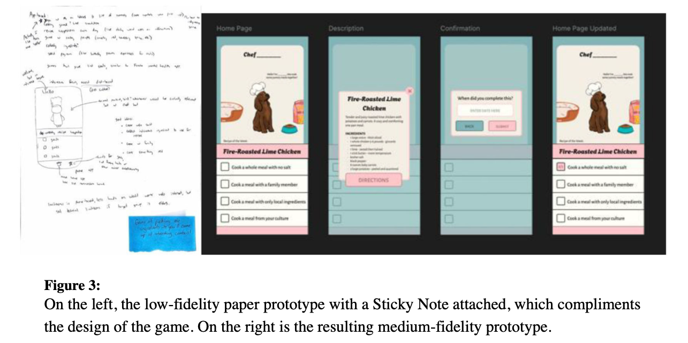
Found "Cook a meal from your culture." The paper names CardioCare Quest as the future home of the five games.
Games and playful apps, side by side.
| Game | Who | Method | What I learned |
|---|---|---|---|
| eSMART-HD / eSMART-HTN[1][2] | Adults with chronic illness; 109 with hypertension, Ohio | Community focus groups; pilot RCT | Rehearse a hard conversation safely |
| Heart Health Mountain[3] | 220 Lumbee adults (planned) | CBPR; RCT protocol | Real steps drive progress; cultural rewards |
| Graham prototypes[4] | 14 Indigenous women, Northern Arizona | Participatory design; RtD | Daily life and familiar games carry content |
| ARORA[5] | 6 Navajo and Hopi advisors; 10 youth | Tribal participatory research | Spoken instructions; explain the meaning |
| ARORA, next round[6] | 9 Hopi/Tewa youth | Usability test; PAR | Design with one nation |
The design methods I learned from these papers.
| Method | What it means | Where I saw it |
|---|---|---|
| Community-based participatory research (CBPR) | Community partners share the research, from the question to the results | Reisinger & Ripat; Radhakrishnan; Kaholokula; Billey |
| Tribal participatory research | CBPR for sovereign nations, with tribal oversight of each step | Vigil-Hayes 2021 |
| Participatory action research | Change the plan and prototype to meet partner needs and build trust | Hagemann 2024, 2026 |
| Talking circles | Each person speaks in turn, without interruption | Reisinger & Ripat; Breathett |
| Advisory board and cultural adaptation | Community members review every lesson; keep the core, adapt the rest | Billey; Vigil-Hayes 2021 |
| Participatory design in research through design | Participants sketch; designers build and compare prototypes | Graham |
| Needs assessment | Ask people what they use, need, and could not get | Hodge; Sanderson |
The study designs I learned from these papers.
| Design | What it means | Where I saw it |
|---|---|---|
| Random household survey | Pick areas, then homes, at random, so results stand for everyone | Percy; Mendlein |
| Checking self-report | Treat "have you been told?" like a test, against measured blood pressure | Sharlin |
| Chart review | Read every chart and compare care with a guideline | Rhoades & Buchwald |
| National surveys and claims | Weighted surveys or billing records; pool years for small groups | Jernigan; Okoro; Rawal; Eberly 2023; Mashinchi |
| Attributable fraction, mediation, interaction | Share of cases from one factor; does it work through BMI; is the benefit equal? | Rawal; Zamora-Kapoor; Assari & Zare |
| Randomized trials | Waitlist, attention control, stepped wedge: chance decides who starts | Kaholokula; Sinclair; Hickman; Radhakrishnan; Hózhó |
| Accuracy without a gold standard | Bayesian estimate using prior ranges | Nozadi |
A health game is a wicked problem, so we learn by making.
- Graham et al. 2025: hypertension care with Indigenous communities meets all ten characteristics of a wicked problem (Rittel & Webber 1973)[1].
- Research through design: making and reflecting on prototypes is the research.
- Annotated portfolio: prototypes side by side, with notes, to name shared patterns.
- Intermediate design knowledge: between one artifact and a general theory.
Rittel and Webber's ten characteristics of a wicked problem.
- No definitive formulation: you cannot fully define the problem
- No stopping rule: you never know when you are done
- Good or bad, not true or false: solutions are judged, not proven
- No immediate or final test: effects keep showing up over time
- Every try is a one-shot operation: each attempt has real consequences
- No full list of solutions: there is always another option
- Every wicked problem is unique: what worked elsewhere may not fit
- A symptom of another problem: problems sit inside other problems
- The explanation decides the solution: how you frame it shapes what you do
- No right to be wrong: designers are responsible for the results
Five design patterns from the co-designed games.
| Pattern | Game | What it means |
|---|---|---|
| Reappropriation | Education: Hypertension Jeopardy | Reuse a familiar game format |
| Situated play design | Diet: the chef game | Play inside daily life: cook a meal from your culture, with family |
| Gamification, near playification | Medication | Points and a shared leaderboard: success as a group |
| Incentivized progression | Blood pressure | Logging blood pressure earns leisure games |
| Playification and deep games | Exercise: Human or Zombie | Story-driven, expressive movement |
What I learned, branch by branch.
Each requirement traces to the papers.
What the papers taught me, question by question.
Four questions for my dissertation.
Informed by those answers, four preliminary questions guide the next study.
Design. How do urban Diné adults with disabilities and their supporters co-design playful tools for daily blood-pressure care?
Support. How can caregiver help be designed in, while keeping the player's own voice?
Culture. How can cultural grounding and community data control be built in, and judged by the Diné community?
Play. How do closed games and open, situated play differ in keeping people engaged?
Preliminary work toward these questions.
- 1Cultural probe, by my former colleagues: 31 Navajo adults over 7 days, in English and Diné bizaad, with Native Americans for Community Action.
- 2Design session, 36 adults with disabilities and caregivers created 23 game concepts.
- 3Play session, community members played CardioCare Quest, with and without support.
A game for each factor, moving for exercise, still for measuring.
- One game per factor, built in Flutter + Firebase with story games in Twine, works offline.
- Played in a supervised session; not yet released for daily use.
- Next: accessibility work with players with disabilities, and a community data plan.
From the Hozhoni Gameorama to a game for every factor.
Develop a game for each factor, with the Diné community
- Turn those ideas into playable games across diet, exercise, medication, measurements, and education,
- add accessibility work with players with disabilities,
- and a community data-sovereignty plan,
- then evaluate in a user study.
What I learned, and the way forward.
- From 34 core papers: hypertension is common and often unknown among Native adults, and it sits inside the disability experience.
- The papers taught me methods (CBPR, talking circles, advisory boards, research through design) and requirements: know your numbers, fit the person and the place, relationship over productivity, community decides, open play.
- The way forward: design playful blood-pressure care with urban Diné adults with disabilities.
Thank you
What this set of papers does not cover.
- Narrowed to Native Americans in the U.S.; two Native Hawaiian trials and two non-Indigenous game papers are kept for their methods.
- The oldest data: Sharlin from 1986, Hodge from 1987, the Navajo survey from 1991–92.
- Three are protocols without results yet: Hózhó, NOSH, Heart Health Mountain.
- 8 of the 34 report national AI and AN results with no tribe-level breakdown.
- One reader (me) selected and read the papers.
Search and screening.
- Serious games, gamification, or playful technology
- For hypertension or blood-pressure self-management, or human-centered / participatory design with Indigenous communities or people with disabilities
- Peer-reviewed; English
- No play or technology element; no self-management aim
- Non-empirical with no design or review contribution
The full search strings.
Six queries: GAMES AND HTN, GAMES AND DISAB, GAMES AND INDIG, TECH AND HTN AND INDIG, TECH AND HTN AND DISAB, DESIGN AND TECH AND (INDIG OR DISAB). Semantic Scholar was not searched; it would be an easy check in an update.
Inclusion and exclusion criteria.
Include (all three)
- A playful or technological intervention
- Targets hypertension or blood pressure
- Involves an Indigenous or disability population, or a method for building with one
Exclude
- "Game" only as a figure of speech (e.g., "a game changer")
- No tie to hypertension
- Teaches clinicians rather than self-management
Included: journal and conference papers, theses, preprints.
Two studies at the Hozhoni Gameorama.
Co-design workshop
36 adults with disabilities and caregivers produced 23 game concepts.
Play session
Community members played CardioCare Quest, with and without caregiver support.
A separate 7-day cultural probe with 31 Navajo adults (English and Diné bizaad, with Native Americans for Community Action) was run earlier by my former colleagues, not at the Gameorama.
The CardioCare Quest project plan.

From the family, through a game for each factor, to data the Diné community controls.
The blood-pressure categories.
| Category | Systolic (mmHg) | Diastolic (mmHg) | |
|---|---|---|---|
| Normal | below 120 | and | below 80 |
| Elevated | 120–129 | and | below 80 |
| Stage 1 hypertension | 130–139 | or | 80–89 |
| Stage 2 hypertension | 140 or higher | or | 90 or higher |
Categories follow the 2025 guideline[1]. Moving the line from 140/90 to 130/80 raised US prevalence from 31.9% to 45.6% (+31 million adults)[2]. WHO still uses 140/90[3], so WHO and US numbers differ.
The IRB scope.
NAU IRB #2117583
Urban Indigenous adults (Navajo people living in Flagstaff) and their supporters.
Tribal consultation
NAU Tribal Liaison, approved 4 Dec 2023. Condition: courtesy letter and report back to any named nation.
Not the Navajo Nation HRRB
No work on the reservation. In ARORA, the board said it had no jurisdiction off tribal lands.
If the work moves onto the Nation
Navajo Nation HRRB review first.
CARE, FAIR, OCAP, and the 4 R's: who decides about Indigenous data?
CARE[1]
Collective benefit · Authority to control · Responsibility · Ethics
Who has the right to decide about this data, and who benefits?
FAIR[2]
Findable · Accessible · Interoperable · Reusable
How should data be managed so it can be found and reused?
OCAP®[3]
Ownership · Control · Access · Possession
First Nations' own rules for their data, from Canada.
The 4 R's[5]
Respect · Relevance · Reciprocity · Responsibility
How should researchers work with the community?
- CARE and OCAP come first: the community decides if and how data is shared. FAIR comes second, only inside those limits[4]. The 4 R's guide the relationship the whole time.
Culture belongs to the community: what to share, and how to show strengths.
- Belarde-Lewis 2011[1], a Zuni and Tlingit scholar: cultural intellectual property, like songs, ceremonies, and masks, is easy to take once it is shared online.
- Zuni and Hopi communities forbid photos and recordings of ceremonies; at Tribal Journeys, the Ahousaht asked visitors not to post their ancestor masks online.
- Dirks, Belarde-Lewis & Pratt 2025[2], with Alaska Native communities: collaborative photo-elicitation, searching for images together, brought out cultural values while designing how to share health research results.
- A strengths-based approach: start from community, health and wellness, and storytelling, rather than deficits.
Learn before asking people for their time.
- Baltaxe-Admony, Duval & Ringland 2024[1], DREEM, a method from our lab: start from media made by disabled creators.
- It builds understanding without spending participants' access labor.
- The figure: its four steps, discover, close read, journal, and aggregate.